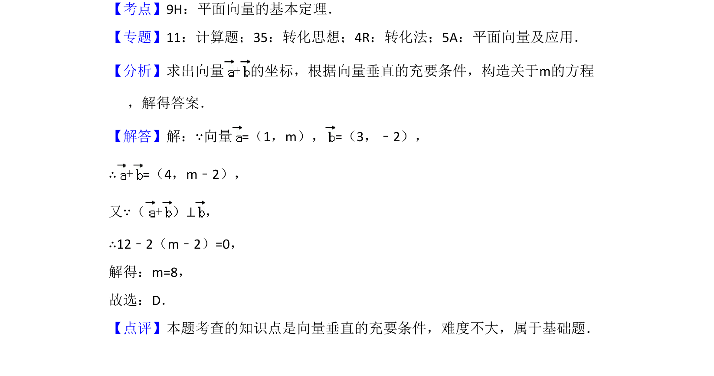

考点：平面向量坐标运算 向量垂直
本题给出两向量坐标，利用垂直关系建立方程求参数 m。

📄 原 PDF 第 2 页：
素材/真题/吉林/2008-2024·（吉林）数学高考真题/2016年高考数学试卷（理）（新课标Ⅱ）（解析卷）.pdf
3．（5分）已知向量=（1，m），=（3，﹣2），且（+）⊥，则m=（ ） A．﹣8 B．﹣6 C．6 D．8
【考点】9H：平面向量的基本定理．菁优网版权所有 【专题】11：计算题；35：转化思想；4R：转化法；5A：平面向量及应用． 【分析】求出向量+的坐标，根据向量垂直的充要条件，构造关于m的方程 ，解得答案． 【解答】解：∵向量=（1，m），=（3，﹣2）， ∴+=（4，m﹣2）， 又∵（+）⊥， ∴12﹣2（m﹣2）=0， 解得：m=8， 故选：D． 【点评】本题考查的知识点是向量垂直的充要条件，难度不大，属于基础题．